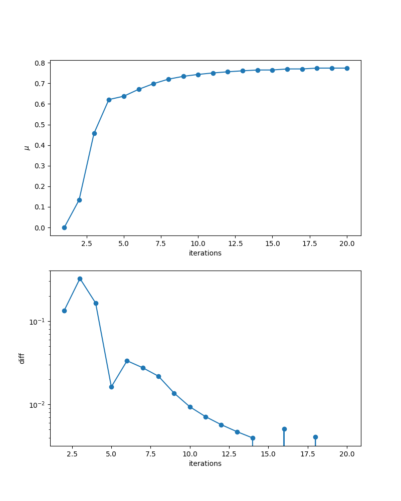
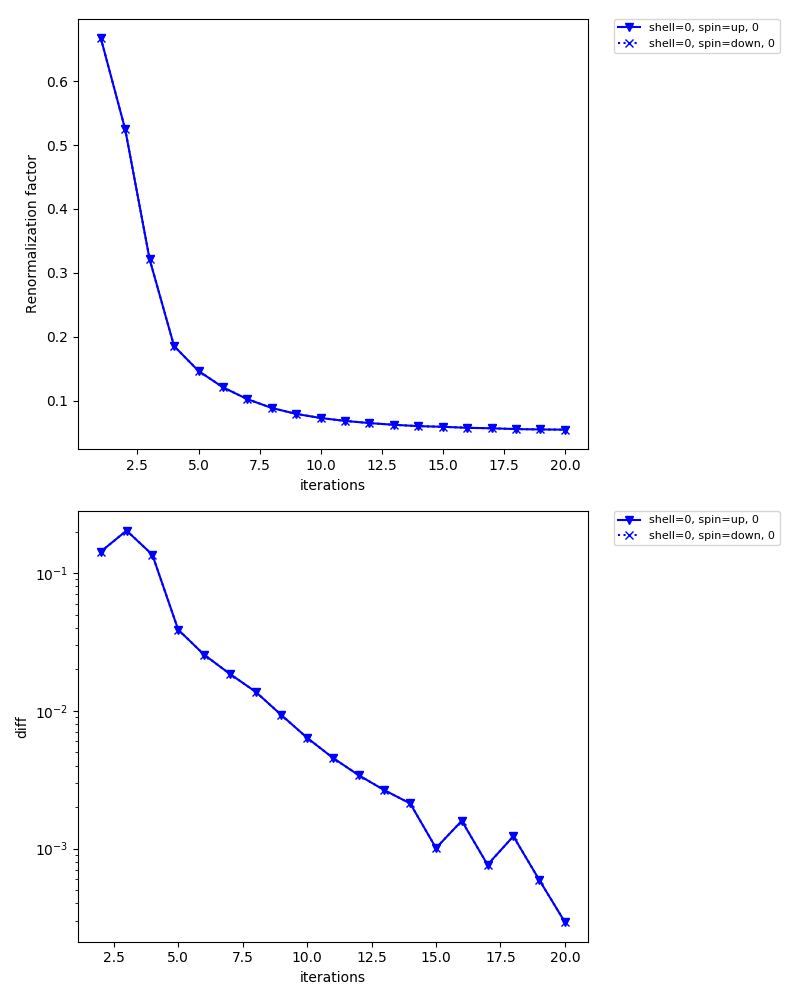
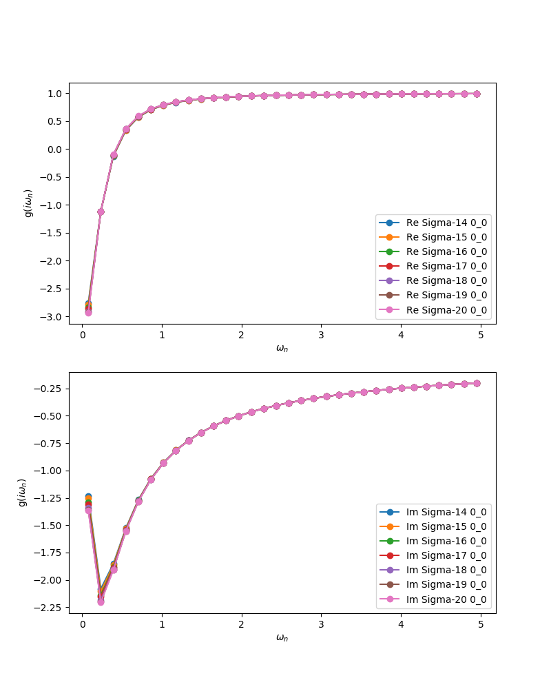

Programs¶
DCore consists of four main programs, dcore_pre, dcore, dcore_check and dcore_post.
All programs read a single input file (say input.ini) which contains parameters classified into blocks.
See Input-file format, for details on the relation between the parameter blocks and each program.
In the following, brief explanations are given for each program.
Pre-processing : dcore_pre¶
This program generates model HDF5 file (seedname.h5).
You need to execute this program before running the main program, dcore.
$ dcore_pre input.ini
Main program : dcore¶
This is the main program, which performs DMFT cycle and output the self energy etc. into a HDF5 file (seedname.out.h5).
$ dcore input.ini --np 4
Please invoke dcore in a single process, specifying the process number with --np option.
In the above case, dcore will lauch four MPI processes internally using the command specified by the parameter command in the [mpi] block.
The solver is executed in the working directory named work/imp_shell0_iter1 (in the case with shell number 0 and iteration number 1). All output generated by the solver are stored in this working directory.
This program should be executed repeatedly until convergence is reached.
You can resume the DMFT iteration using the previous results by specifying restart = True in the [control] block (default is False).
The output file, seedname.out.h5, is created, updated, or backed up depending on
whether the previous run exists and also on the restart parameter.
The behavior is summarized below.
seedname.out.h5 |
|
behavior |
|---|---|---|
not exists |
True, False |
A new file is created |
exists |
False |
The file is backed up with the name seedname.out.h5.bak, and a new file is created |
exists |
True |
The iteration is resumed, and the file is updated |
Convergence-check : dcore_check¶
This program is used to check the convergence of the DMFT loop.
$ dcore_check input.ini [--prefix PREFIX] [--ext EXT]
Here PREFIX is the prefix for all output files,
and EXT is the file extension of output figures (png, pdf, eps, jpg, etc).
The default values are PREFIX=check/ and EXT=png.
All results are stored in check directory without specified.
Three kinds of figures will be included:
iter_mu.png
The chemical potential as a function of iteration number.
iter_sigma-ish0.png
The renormalization factor as a function of iteration number.
sigma_ave.png
The averaged self-energy at the last seven iterations.
Here, the average is taken as follows:
\[\Sigma_{\rm Ave} (i \omega_n) = \left[\sum_i^{\rm shell} \sum_{\alpha \beta}^{N_{\rm orb}^i} \Sigma_{\alpha \beta}(i\omega)\right] /\left[\sum_i^{\rm shell} N_{\rm orb}^{i}\right],\]The maximum frequency of this plot is specified with the parameter
omega_checkin the[tool]block.
{kind=link}
{kind=link}
{kind=link}
Post-processing : dcore_post¶
This program computes the total DOS (seedname_dos.dat) and momenum-resolved spectral function (seedname_akw.dat) reading the DMFT results in seedname.out.h5.
$ dcore_post input.ini --np 4
Here, please specify the number of MPI processes. The computed spectral function can be drawn by
$ gnuplot [seedname]_akw.gp
Using this gnuplot script, you can also see the original (DFT) band structure as follows if either seedname_band.dat (Wannier90 output) or dir-wan/dat.iband (RESPACK output) exists.

“+” indicates the original band structure.
The original band structure is shifted by the chemical potential specified by mu in [system] block.
Online help¶
For all programs, online help is available by -h option.
For example, the help of the main program dcore looks like
$ dcore -h
usage: $ dcore input.ini --np 4
.
positional arguments:
path_input_file input file name.
optional arguments:
-h, --help show this help message and exit
--np NP Number of MPI processes
Additionally, the complete list of the input parameters are shown. It would help readers to make use of the latest features in the develop branch that are not documented in this manual.